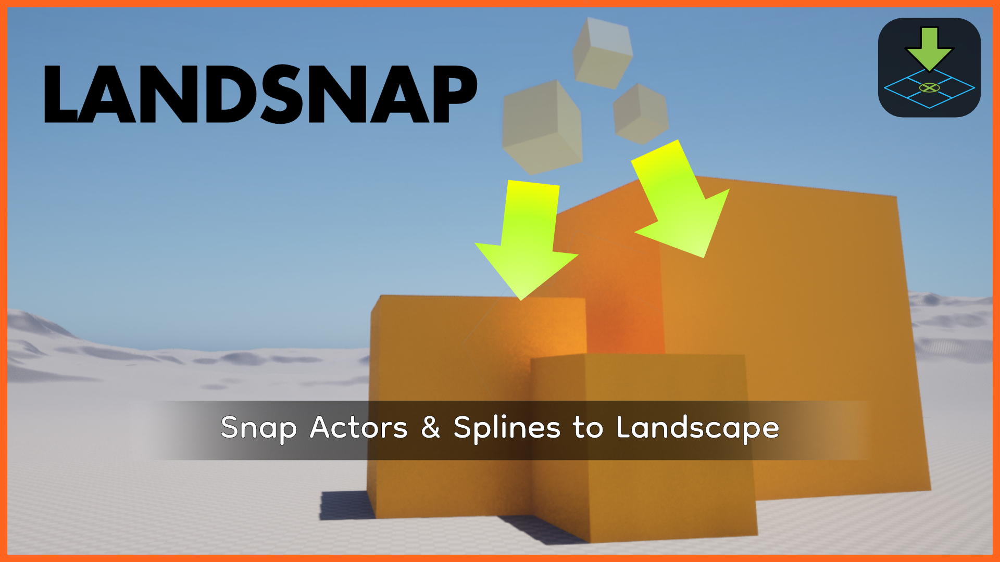

Devlog / public record
Milestones, experiments, and creative notes from the pipeline.
Nightshift documents progress as systems lock in, worlds take shape, and new public-facing surfaces come online.

Devlog / public record
Nightshift documents progress as systems lock in, worlds take shape, and new public-facing surfaces come online.
Latest Entries
2026 Archive

A first club POI blockout is in testing for AfterDark. The pass is rough by design, focused on circulation, sightlines, lighting pockets, and early vent and pipe routes for Spy and Hitman loop testing.
Read entry
The tactical wall prototype is still not fully dialed in, but the latest material pass makes the wall read better in-game. Insulation now adds a much-needed middle layer, while the wood and frame treatment still need another pass.
Read entry
A quick Nightshift studio update: Exile recovered roughly a thousand hours of previously lost work after the original persistence and pawn-lifecycle dead end, and the core boot and possession path was restored inside a day.
Read entry
Since the May 29 devlog, AfterDark has pushed through the first real train-track pass in Blender, hardened the tooling around that pipeline, moved siege walls onto a more optimized forward path, and kept layering practical MVP systems into S17 V3.
Read entryA direct note about the public site: the devlog and much of the site are now being maintained through Codex, which keeps things moving but also means some parts are still plainly workmanlike instead of polished.
Read entry2026 Archive
Since the May 21 update, AfterDark has had another unusually chunky week: S17 V3 moved from pipeline direction into a heavier synced map state, tactical walls became a real Siege-style testbed, ambient traffic and NPC authoring started layering into the city, and player identity/persistence work got sturdier under the hood.
Read entryA more personal studio update on the production side: Nightshift is starting work on a motion capture rig, continuing to build the character and Blender tooling stack, and looking at the remaining gaps around clothing, hair, and faster content creation.
Read entrySince the April 27 devlog, AfterDark has moved from a larger S17 V2 map push into a bigger production pipeline shift: S17 V3 is being built around Blender sync, BlenderMCP and Blender Bridge are becoming real workflow tools, police rappelling is in, vehicles are spawning, and the codebase has picked up major foundations for reputation, NPCs, business loops, tactical cover, optimization, and future district control.
Read entry2026 Archive

The last month in AfterDarkRP was not one isolated feature drop. It was a sustained push across S17 map buildout, materials and lighting polish, prop and toolgun protections, gameplay support systems, and the first resident NPC/navigation layer aimed at making the city feel denser and more controllable.
Read entry2026 Archive

This week was heavier than a simple visual pass: S17 picked up a major asset and scene push across Ghetto_01, Downtown, and TrainStation alongside baseline LOD coverage, light/time optimization, Blender cleanup, connector planning, atmosphere work, and supporting gameplay/UI changes aimed at making Ghetto_01 testable instead of fragile.
Read entry
Map work is still moving, and code is still progressing, but AfterDarkRP has slowed around a narrower target: getting Ghetto 01 playable and reaching the point where server-sided code can actually be tested. Weed growing is close, with the sell loop still left to lock.
Read entry
Since the February 13, 2026 launch-push post, AfterDarkRP has expanded its live role roster, tightened economy interactions, and split the public site into clearer guide, changelog, and devlog surfaces.
Read entry
Since the last devlog, AfterDarkRP has expanded across law, economy, shipments, printers, world interactions, and the first full Weed Grower pipeline, while map focus narrows around Ghetto 01 and Downtown.
Read entry2026 Archive
We are locking the core DarkRP systems and moving fast to launch before the April s&box release window.
Read entry
We prototyped a three-phase encounter flow to find the balance between momentum and deliberate timing while the project direction stayed combat-first.
Read entry
LandSnap 1.0.0 is officially released with the core placement workflow locked and ready for production use.
Read entry